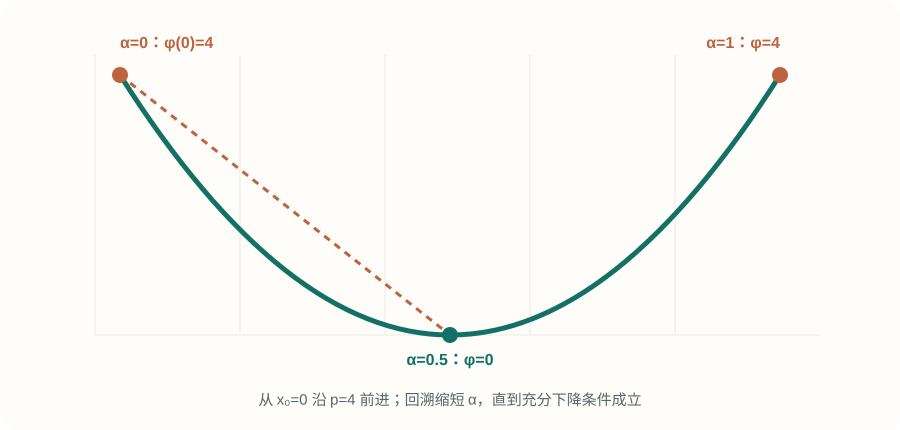

步长选择：沿着下降方向走多远
方向导数只说明足够小的步子是否下降，并不能决定走多远。步长条件在函数下降、曲率信息与计算成本之间折中，是线搜索算法的核心。
把多维问题压到一条直线上
给定当前点 xₖ 和下降方向 pₖ，线搜索考虑 φ(α)=f(xₖ+αpₖ)，只在 α>0 的一维射线上选择步长。链式法则给出 φ'(0)=∇f(xₖ)ᵀpₖ；当它为负时，足够小的正步长会带来下降。
精确线搜索要解 min_{α>0} φ(α)，通常每轮计算成本太高。非精确线搜索只要求步长满足一组可检查的不等式，从而在函数评估次数与理论收敛条件之间折中。
先看一个可以手算的例子
令 f(x)=(x−2)²，当前点 x₀=0，选 p=4。于是 φ(α)=(4α−2)²，起点函数值为 4，沿方向的初始斜率为 −16。α=0.5 正好到达最小点；α=1 则走过头，函数值又回到 4。

Armijo：要求足够下降
Armijo 条件也称充分下降条件。它要求新点的函数值至少比起点下降一个与 α 成正比的量。c₁ 通常是很小的正数，且必须满足 0 只满足 Armijo 可能接受非常小的步长。步长虽下降，却可能让算法每次只移动一点点，因此通常还会加入曲率条件来避免过小步长。
Wolfe 与强 Wolfe：兼顾曲率
弱 Wolfe 条件在 Armijo 之外要求新点方向导数不再过于负。这里 φ'(0)<0，故右侧 c₂φ'(0) 仍为负数。常用参数满足 0 强 Wolfe 条件把曲率要求改为斜率绝对值足够小：|φ'(α)|≤c₂|φ'(0)|。它同时限制方向导数不能过于负，也不能在新点变成过大的正值。
Goldstein：给函数值下降设上下界
Goldstein 条件通过两个不等式夹住新点函数值，既防止下降太少，也避免选择过小步长。参数 0 在前面的二次例子里，α=0.5 时 φ=0、φ'(0)=−16。取 c=0.2，Goldstein 的允许区间为 [−2.4,2.4]，所以该步满足条件。
回溯：从大步长开始逐次缩短
回溯线搜索从 α₀>0 开始检查 Armijo 条件。若不满足，就令 α←ρα，其中 0<ρ<1，重复检查。对可微目标和下降方向，在常见连续性条件下，充分小的正步长最终会满足 Armijo，因此回溯可以终止。
- 选择初始步长 α₀，常见做法是先尝试 1。
- 若 Armijo 不满足，缩短步长 α←ρα。
- 重复直到满足条件；记录函数评估次数与最终步长。
如果 p 不是下降方向，φ'(0)≥0，不能指望足够小的正步长满足通常的 Armijo 下降要求。实际实现还应设置最大回溯次数，避免异常输入导致无限循环。
交互：观察 Armijo 与 Wolfe 条件
固定 f(x)=(x−2)²、x₀=0、p=4。移动 α，页面计算 φ(α)、Armijo 上界、弱 Wolfe、强 Wolfe 与 Goldstein 是否成立。
实时计算
参数 c₁=10⁻⁴、c₂=0.9、Goldstein c=0.2。
Python：四种条件与有界回溯
程序使用解析函数与导数，分别检查 Armijo、弱 Wolfe、强 Wolfe、Goldstein，并将回溯循环限制为最多 100 次。它只用于这个一维示例，后续章节再讨论一般的 Wolfe 搜索算法。
"""Armijo, weak/strong Wolfe, Goldstein and backtracking on a scalar line."""
from math import isclose
def f(x: float) -> float:
return (x - 2.0) ** 2
def phi(alpha: float) -> float:
# x0=0 and descent direction p=4.
return f(4.0 * alpha)
def phi_prime(alpha: float) -> float:
return 32.0 * alpha - 16.0
def armijo(alpha: float, c1: float = 1e-4) -> bool:
return phi(alpha) <= phi(0.0) + c1 * alpha * phi_prime(0.0)
def weak_wolfe(alpha: float, c1: float = 1e-4, c2: float = 0.9) -> bool:
return armijo(alpha, c1) and phi_prime(alpha) >= c2 * phi_prime(0.0)
def strong_wolfe(alpha: float, c1: float = 1e-4, c2: float = 0.9) -> bool:
return armijo(alpha, c1) and abs(phi_prime(alpha)) <= c2 * abs(phi_prime(0.0))
def goldstein(alpha: float, c: float = 0.2) -> bool:
lower = phi(0.0) + (1.0 - c) * alpha * phi_prime(0.0)
upper = phi(0.0) + c * alpha * phi_prime(0.0)
return lower <= phi(alpha) <= upper
def backtracking(alpha0: float = 1.0, rho: float = 0.5, c1: float = 1e-4) -> float:
if alpha0 <= 0.0 or not 0.0 < rho < 1.0 or not 0.0 < c1 < 1.0:
raise ValueError("require alpha0>0 and rho,c1 in (0,1)")
alpha = alpha0
for _ in range(100):
if armijo(alpha, c1):
return alpha
alpha *= rho
raise RuntimeError("Armijo backtracking did not terminate within 100 trials")
if __name__ == "__main__":
selected = backtracking()
print("alpha=1 Armijo:", armijo(1.0))
print(f"backtracking selected alpha={selected:.6f}, phi={phi(selected):.6f}")
print("weak Wolfe at alpha=0.5:", weak_wolfe(0.5))
print("strong Wolfe at alpha=0.5:", strong_wolfe(0.5))
print("Goldstein at alpha=0.5:", goldstein(0.5))
assert not armijo(1.0)
assert isclose(selected, 0.5)
assert armijo(selected)
assert weak_wolfe(0.5)
assert strong_wolfe(0.5)
assert goldstein(0.5)练习：证明在 φ'(0)<0 且 φ' 连续的条件下，充分小的 α 会满足 Armijo。为什么仅凭 Armijo 条件无法保证步长不会过小？